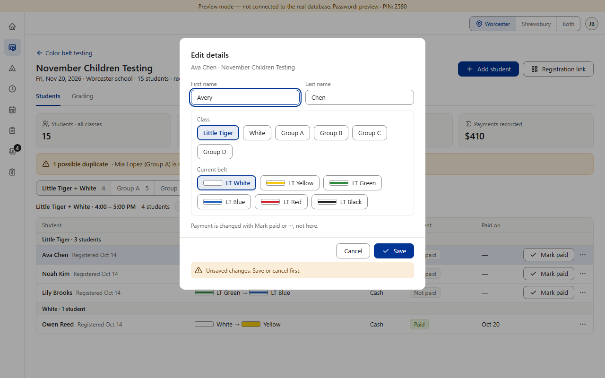
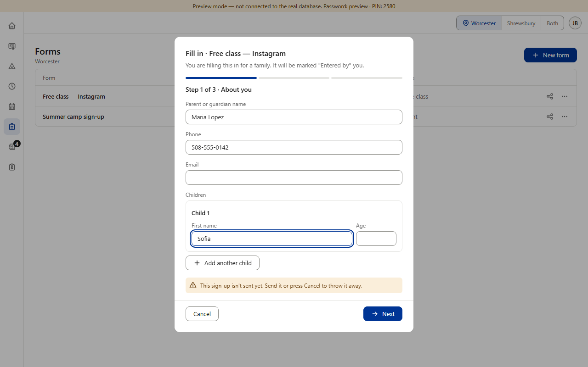
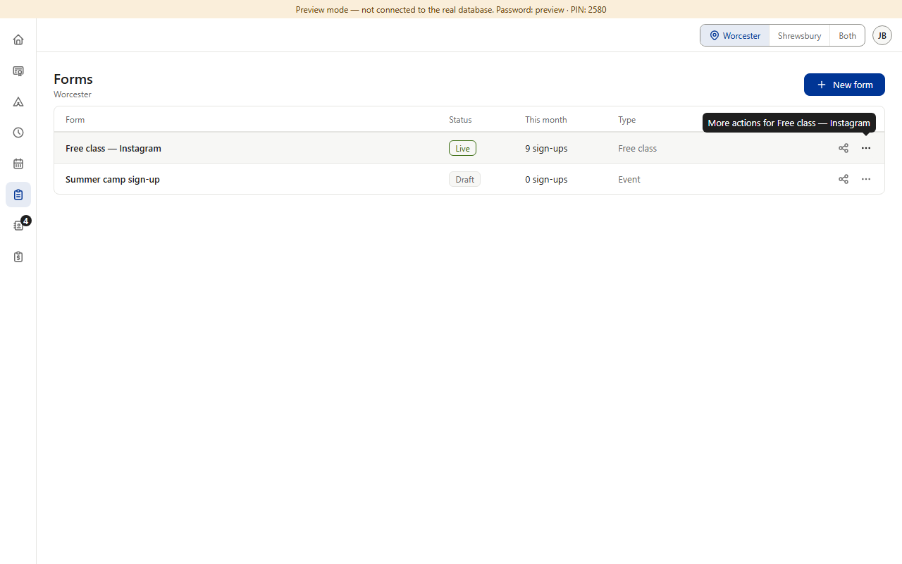
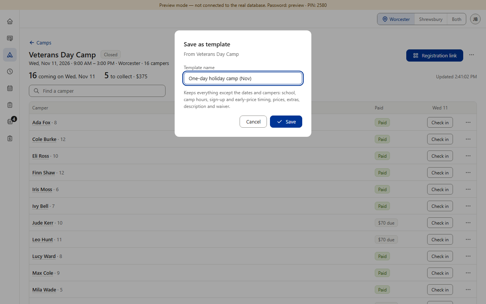
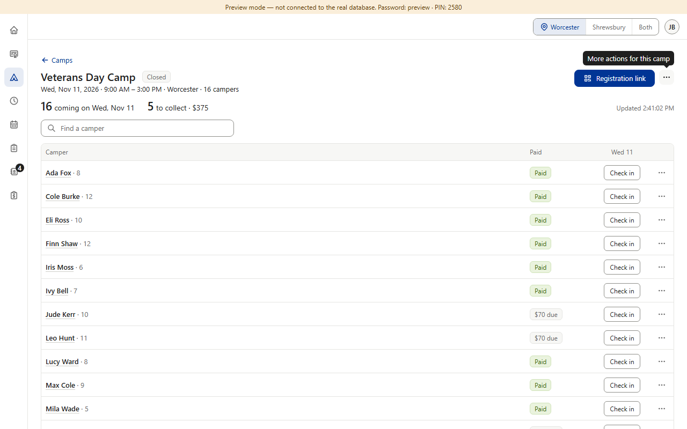
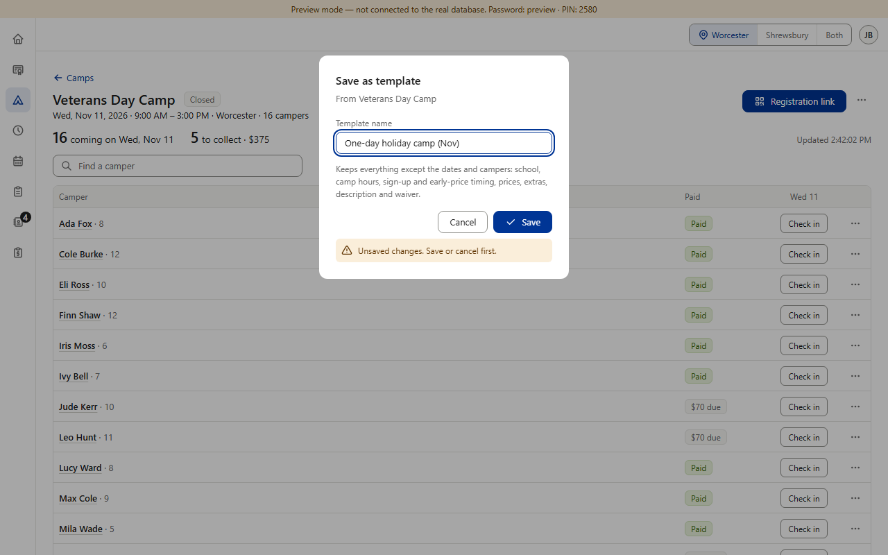

Approved rule, a few gaps (drift; one planned). The rule (v0.46): if someone has typed and presses Esc, clicks outside or goes back, the dialog stays open with “Unsaved changes. Save or cancel first.” — nothing typed is silently lost (phones add a “Discard changes” link, v0.56). Most dialogs follow it. Gaps found and tested in the preview: Forms' Fill in and New form close on a second Esc and the answers are gone — although Fill in's own note says “press Cancel to throw it away”; Camps' Save as template closes on the first Esc; Prospects' Edit statuses drops a changed status with no note; Change PIN / Change password close on Esc (aligning them was planned in v0.56, “to be aligned later with Jeffrey's OK”). On purpose: Finance's Close the day keeps a draft instead (v0.800); Black Belt's rubric editor has its own leave rule (v0.928). No guard needed: Prospects' one-click dialogs (Book a time, Joined, Came?) hold nothing typed. (Preview screenshots at PC size · fake data)





